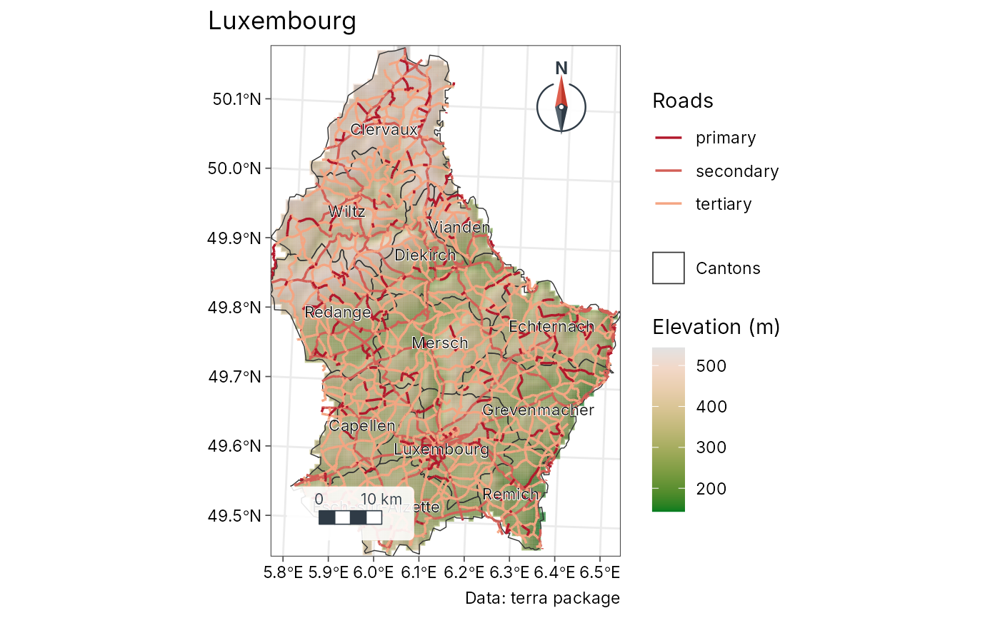

Layered maps, built one layer at a time
geo-map.RdA map in the style of a desktop GIS layout: a stack of layers, each with
its own legend section and the right symbol for its geometry. Start with
geo_map(), add layers with the pipe, and print (or geo_save()) the
result:
map_raster()draws a continuous surface (elevation, rainfall, a diversity surface) with a gradient legend, optionally over a hillshade.map_polygons(),map_lines()andmap_points()drawsffeatures. Givefillorcoloura column name to colour features by a category or a classed number, or a colour for one plain symbol. Either way the layer gets its own legend section: polygon swatches, line keys or point symbols.map_labels()writes feature names with a white halo, so they stay readable over any background.map_curved_labels()writes text that follows the shape of any feature: along lines (roads, rivers, contours), along the long axis or the outline of polygons (lakes, valleys, regions), or around an arc above points. The text stays upright and labels longer than their path are left out.map_line_labels()is the same for lines.map_contours()draws contour lines of a raster with their heights written along them, set straight and aligned with the line as on topographic maps.map_zoom()zooms in or out, on the centre or on a point, or shows an exact extent; the scale bar follows.
Layers are drawn in the order they are added (the first at the bottom).
The legend lists them the other way round, top layer first, as in GeoSpaX,
QGIS and ArcGIS layouts. Everything is projected to one coordinate
reference system, chosen from the first layer unless you give crs.
Usage
geo_map(
title = NULL,
subtitle = NULL,
caption = NULL,
crs = "auto",
scale_bar = "checker",
north_arrow = "needle",
graticule = FALSE,
legend = c("right", "bottom", "inside", "none"),
legend_corner = "auto"
)
map_raster(
map,
x,
name = NULL,
palette = "auto",
hillshade = FALSE,
alpha = if (hillshade) 0.65 else 1,
limits = NULL
)
map_polygons(
map,
data,
fill = "grey90",
label = NULL,
group = NULL,
palette = "auto",
n = 5,
style = "jenks",
border = "grey35",
linewidth = 0.25,
linetype = "solid",
alpha = 1,
preset = NULL
)
map_lines(
map,
data,
colour = "grey20",
label = NULL,
group = NULL,
palette = "auto",
n = 5,
style = "jenks",
linewidth = 0.6,
linetype = "solid",
alpha = 1,
preset = NULL
)
map_points(
map,
data,
fill = "#0072B2",
label = NULL,
group = NULL,
palette = "auto",
n = 5,
style = "jenks",
shape = 21,
size = 2.5,
border = "grey15",
alpha = 1,
preset = NULL
)
map_labels(
map,
data,
text,
size = 3,
colour = "grey10",
halo = TRUE,
fontface = "plain"
)
map_curved_labels(
map,
data,
text,
size = 3,
colour = "grey15",
draw_line = NULL,
linewidth_label = 0.4,
position = 0.5,
polygon = c("axis", "outline"),
radius = NULL,
smooth = 3,
fontface = "plain"
)
map_line_labels(map, data, text, ...)
map_contours(
map,
x,
interval = NULL,
breaks = NULL,
colour = "grey30",
label_every = 2,
size = 2.6,
linewidth = 0.25
)
map_zoom(map, zoom = 1, centre = NULL, extent = NULL)
map_build(map)Arguments
- title, subtitle, caption
Map title, subtitle and caption (for example the data source).
- crs
Coordinate reference system of the map:
"auto"(the first layer's, or UTM when that is longitude/latitude), an EPSG code, ansf::st_crs()object, or a projection name understood bygeo_crs()such as"equal_earth"or"laea".- scale_bar, north_arrow
Style of the scale bar and north arrow (see
annotation_scale_bar()andannotation_north_arrow());FALSEto leave them out.- graticule
Draw a labelled graticule? Default
FALSE: coordinates appear on the axes.- legend
Legend position:
"right","bottom","inside"(in a framed box on the map) or"none".- legend_corner
For
legend = "inside", the corner:"auto"(default) picks one free of the scale bar and north arrow that hides the least of the mapped features, or"tr","tl","br","bl".- map
A map started with
geo_map().- x
For
map_raster(), aSpatRaster(the first layer is drawn).- name
Legend title of a raster.
- palette
Colours for a column:
"auto", a name fromgrDevices::hcl.pals(), or a vector of colours. For categories,"auto"gives Okabe-Ito colours; for numbers, a sequential ramp.- hillshade
Draw the raster over its own hillshade? Useful for elevation.
- limits
For
map_raster(), the range of the colour scale, such asc(0, 1)for probabilities. Give the same limits to rasters in several panels so that one colour means one value andgeo_panels()can merge their legends into one.- data
An
sftable.- fill, colour
A column name (quoted or not) to colour features by, or a single colour.
- label
Legend entry for a layer drawn in one colour, for example
"Highways". Defaults to the name ofdata.- group
Legend section heading. Defaults to the column name for coloured layers, and to no heading for one-colour layers.
- n, style
For numeric columns, the number of classes and the classification style, passed to
geo_classify().- border, linewidth, linetype, alpha
Outline colour, line width (mm), line type and transparency.
- preset
A standard cartographic symbol by name, such as
"water","forest","protected_area"(polygons),"river","road_major","railway","boundary"(lines) or"town","peak","sample_site"(points); seemap_presets(). Arguments you give yourself override the preset.- shape, size
Point symbol (a number from
graphics::points()) and size.- text
Column with the label text.
- halo
Draw a white halo behind the labels?
- fontface
Font face of the labels, for example
"italic"for rivers or"bold"for towns.- draw_line
For curved labels, also draw the path (cut where the text sits)? Default
TRUEfor lines andFALSEotherwise; withFALSEthe text sits just above the path.- linewidth_label
Width of the lines drawn by
map_line_labels().- position
Where along each line the label sits, from 0 (start) to 1 (end); default the middle.
- polygon
For polygons, write along the shape's long
"axis"(bent with the shape) or along its"outline", just inside the edge.- radius
For points, radius of the label arc in map units; by default 3.5% of the map width. Point labels are always drawn.
- smooth
Rounds of corner smoothing of the label path, so text reads evenly along jagged lines (0 for none).
- ...
For
map_line_labels(), arguments passed tomap_curved_labels().- interval, breaks
Contour spacing in the raster's units, or the exact contour levels. By default about eight levels at round numbers.
- label_every
Label every nth contour (default every second one, as on topographic maps).
- zoom
Zoom factor for
map_zoom(): 2 shows half the width and height (closer), 0.5 shows twice as much around the data.- centre
Point to zoom on,
c(longitude, latitude); by default the centre of the extent.- extent
Area to show: an
sfobject, a bbox, a terra object, orc(xmin, ymin, xmax, ymax)in degrees. By default all layers.
Value
geo_map() and the map_*() functions return a tmr_map; it
prints as a map. map_build() turns it into an ordinary ggplot, to
which you can add ggplot2 layers, scales and themes.
See also
geo_automap() for a one-call map of one layer; map_legend()
and theme_tidymapr() to restyle the result of map_build().
Examples
# Luxembourg: elevation, cantons, highways and canton names
# (data shipped with terra)
elev <- terra::rast(system.file("ex/elev.tif", package = "terra"))
cantons <- sf::st_read(system.file("ex/lux.shp", package = "terra"), quiet = TRUE)
roads <- sf::st_as_sf(terra::unwrap(
readRDS(system.file("ex/lux_highways.rds", package = "terra"))
))
geo_map(title = "Luxembourg", caption = "Data: terra package") |>
map_raster(elev, name = "Elevation (m)", palette = "Terrain 2",
hillshade = TRUE) |>
map_polygons(cantons, fill = NA, border = "grey20", label = "Cantons") |>
map_lines(roads, colour = highway, palette = c("#B2182B", "#F4A582"),
group = "Roads") |>
map_labels(cantons, text = NAME_2)
